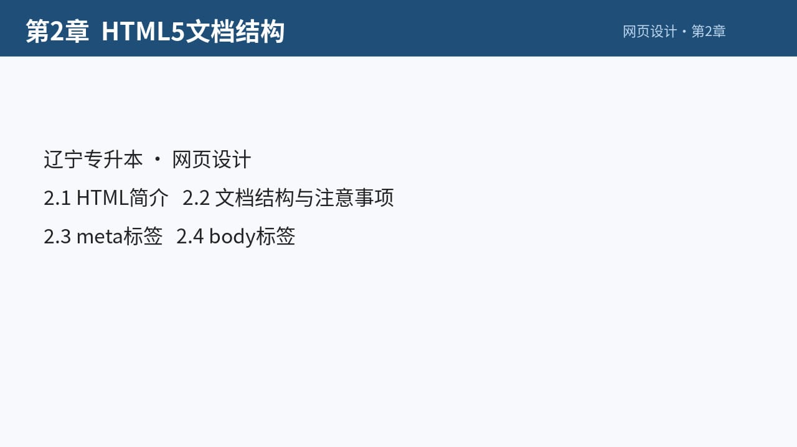

2.3 <meta> 标签详解
1. 设置网页关键字（供搜索引擎抓取）
2.3<meta>标签详解
<meta>标签用于定义网页的元数据（描述性信息），不会直接显示在页面上，但会被浏览器和搜索引擎识别。
常用 meta 属性示例：
1. 设置网页关键字（供搜索引擎抓取）
<meta name="keywords" content="HTML,前端开发,学习教程">整理
<meta> 用来定义网页的元数据（描述性信息），不直接显示在页面上，但会被浏览器和搜索引擎识别。
- 关键字（供搜索引擎抓取）
<meta name="keywords" content="HTML,前端开发,学习教程">
2. 设置网页描述（搜索引擎结果中会显示）
2. 设置网页描述（搜索引擎结果中会显示）
<meta name="description" content="这是 HTML 基础入门教程，适合新手学习">整理
- 网页描述（搜索结果中会显示）
<meta name="description" content="这是 HTML 基础入门教程，适合新手学习">
3. 设置网页作者
3. 设置网页作者
<meta name="author" content="马斯克">整理
- 作者
<meta name="author" content="马斯克">
4. 设置字符集（防止乱码）
4. 设置字符集（防止乱码）
<meta charset="utf-8">整理
- 字符集（防止乱码）
笔记补充：也可用 GB2312（中文简体）。<meta charset="utf-8">
5. 设置页面自动刷新与跳转（10 秒后跳转到指定网址）
只写 content=10（不写URL）表示每隔10秒刷新当前网页
5. 设置页面自动刷新与跳转（10 秒后跳转到指定网址）
<meta http-equiv="refresh" content="10;url=https://www.example.com">整理
- 自动刷新 / 跳转
<meta http-equiv="refresh" content="10;url=https://www.example.com">10：秒数url：跳转目标- 也可表示每隔 10 秒刷新当前页面（不写 url 时）
自测要点
- 6meta：keywords / description / author / charset / refresh
延伸
HTML 头部
<head> 放元数据：标题、编码、样式与脚本引用等，一般不直接显示在页面主区域。
<title>：标签栏标题（head 中几乎必写）<meta charset="utf-8">：字符集<link rel="stylesheet" href="a.css">：外链样式<style>...</style>：内部样式<base href="...">：为相对链接规定基准（了解）
思维导图
- 2.3<meta>标签详解
- 定义网页的元数据（描述性信息）
- 不会直接显示在页面上
- 设置网页关键字：keywords
- 设置网页描述：description
- 设置网页作者：author
- 设置字符集（防止乱码）：charset="utf-8"
- 手写批注：GB2312 中文简体
- 设置页面自动刷新与跳转：http-equiv="refresh"
- 10 秒后跳转到指定网址
- 手写批注：只写 content=10（不写URL）表示每隔10秒刷新当前网页
视频

第2章 HTML5 文档结构6:51